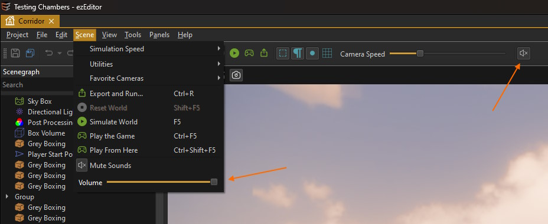

MiniAudio Integration
MiniAudio is a leight-weight, cross-platform audio solution. Its integration is provided as a free alternative to the FMOD integration, for games that have fewer requirements for game audio. It is also easier to set up and use, especially if you are unfamiliar with FMOD.
The MiniAudio integration supports both positional (3D) and non-positional sound sources. The MiniAudio listener component is used to control from where sound is perceived.
The MiniAudio sound asset is used to get a .WAV or .MP3 file into the engine and contains options for randomizing sound playback.
Sounds can also be played programmatically, e.g. from visual scripts or AngelScripts, using the script function ezSound::PlaySound().
How To Enable MiniAudio
To enable MiniAudio support in your project, follow these steps:
- Open ezEditor
- Go to Project > Plugin Settings > Plugin Selection... to open the plugin selection dialog.
- If MiniAudio is greyed out, you have another sound plugin active (such as FMOD). Deactivate that sound plugin.
- Activate the MiniAudio plugin and click OK.
- Click Yes to restart the editor.
If your project already made use of other sound components, the Asset Curator will now show you which assets need to be updated.
Scene Editing Settings
The MiniAudio editor plugin adds UI elements to mute sound entirely and to adjust the overal volume:

Limitations
Currently, all instantiated sounds get played, no matter how far away they are. There is no sound virtualization and no culling. This is typically no problem for small games, but when you start making games with larger scenes, you may run into performance problems.
The attenuation model of MiniAudio is also not particularly well suited for first-person and third-person types of games, as it lacks control for game designers.
Overall, the feature set of MiniAudio is not comparable to what FMOD offers, and the integration into EZ is even more limited. Some functionality can and may get added to the integration, but if you do need significantly more control or plan on building large worlds where many sounds may play simultaneously, FMOD is the better choice.
The concepts of how MiniAudio and FMOD are integrated into EZ are nearly identical, so it is possible to start with MiniAudio and switch to FMOD when needed. However, be aware that you would still need to adjust every object and every script that plays sound, as you would need to switch from the MiniAudio sound component to the FMOD event component and adjust asset GUIDs in scripts.